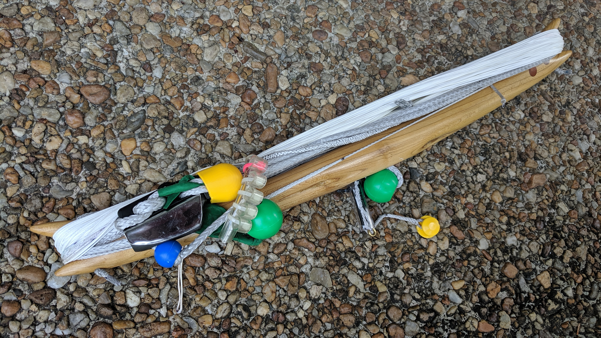
Buggy Bar Book
This is how you build a Buggy Bar.
1 Overview
This document describes how to build a Buggy Bar. The Buggy Bar is a kite control bar designed by and for Kite Buggiers. This bar is targeted specifically at non-jumping land-kiting with a focus on high function and ease of use to keep the flier safe and focused on piloting. This design is released under a Creative Commons license to allow anyone to use the design to build the bar for personal use or resale.
1.1 Bill of materials
- 1 kite control bar: 17” - 20” between the steering lines; a rimless, circular trimline borehole on the kite-side of the bar; a deeply beveled cut left and right of the trimline borehole on the pilot-side of the bar.
- 1 CL826-11AN AERO CLEAT FOR 4-6MM ROPES - HARD ANODISED
- 2510mm Samson AmSteel-Blue Single Braid Line Diameter: 5/32” (4mm)
- 4910mm Ultrex 12 1/16”
- 410mm Samson Ropes Amsteel Blue AS78 Line: 7/64” (2.5mm)
- 1 Small Stopper Ball Green ~5/32” ID, 16-18mm OD
- 1 Medium Stopper Ball Green ~1/4” ID, 25-32mm OD
- 1 Separation Block v2 6mm trimline bore release 1.4.2
- 1 Cleat Bead release 1.4.2
- 1 Chickenloop Handle
- Two 2” long, 1/8” cotter pin
- 40mm of 1/2” OD vinyl tubing
- ~260mm of 2mm bungee
- 3/8” diameter bead or 1/2” of 1/2” vinyl tubing
- ~39mm of 0.102” Diameter 304 Stainless Steel hardened wire
1.2 Tools required
- Razor blade or other very sharp knife
- Cutting board
- Scissors
- Short wire fid (~150mm)
- Long wire fid (~850mm)
- Cyanoacrylate glue (preferrable thin)
- Cyanoacrylate accelerant (optional)
- Metric tape measure
- Sewing machine with a large needle and high-strength polyester thread, preferably V-46 Dabond 2000 UVR Polyester thread
- A modified presser foot with a 1mm-wide groove aligned with the needle.
- Rubber mallet
- Bench vise with wooden jaws or other means of bending 0.025 metal sheet
- Two strong spring clips
- 2m long stick and some scrap line to place the flag line under tension
- Adjustable wrench for line stretching
- 5/32” drill bit
- 1/16” drill bit
2 Component construction
2.1 Control bar
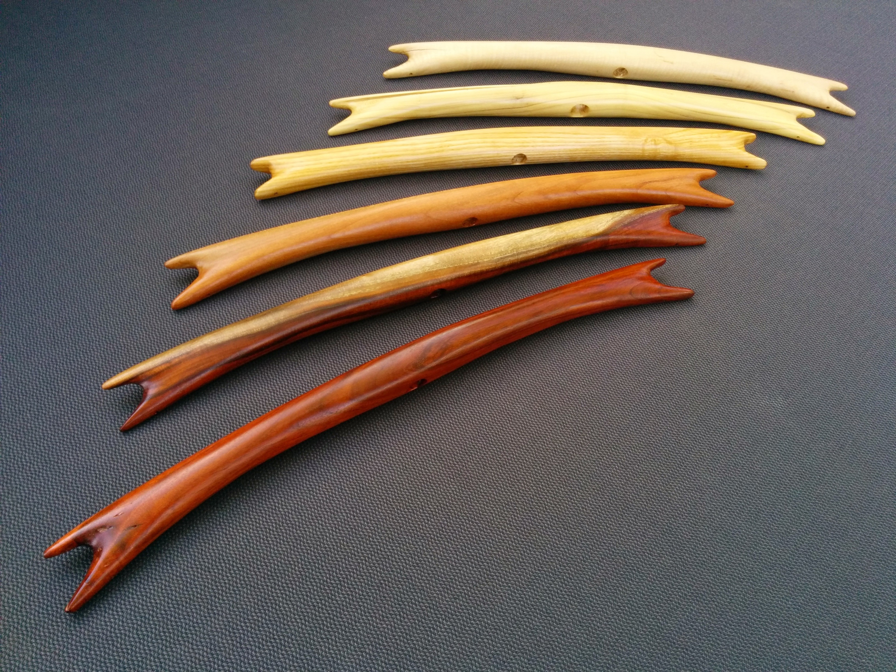
No specific control bar is required, but there are a few features the bar needs to function properly. The bar should not be any larger than needed. A bar with a 17” center-to-center spacing between the steering lines works for most suitable buggy kites. A 20” spacing is probably the largest you would ever need. The trimline bore needs to be circular and smooth on the kite face of the bar as shown in Figure @ref(fig:kite-side-borehole). A bore hole diameter of 1/2” (12.5mm) is about ideal. The circular hole allows the bar to spin freely against spherical surface of the cleat bead. The smooth surface around the trimline borehole is more comfortable for gripping the bar at the center to fly with one handed.

The pilot-side of the bore hole needs to be deeply beveled left and right of the trimline borehole as shown in Figure @ref(fig:pilot-side-borehole). This allows the bar to be sheeted in and out during hard turns. Without the cutouts, the bar could bind in a turn and sheeting changes would be difficult if not impossible.

2.2 Trim Line
To build the trimline, you will need 2510mm of Amsteel Blue (use only the gray color), 80mm x 105m of insignia cloth (dark colors are better), two 18mm x 3mm nickel-plated neodymium disc magnets, 150mm of 0.095” plastic cord, one small stopper ball and one medium stopper ball.
2.2.1 Starting the trim line and making the threading end
Cut a segment of gray 4mm Amsteel Blue to a length of 2510mm with a fresh razor blade to get a clean cut. Pick out 4 strands from one end of line pulling one strand at each of 5, 10, 15, and 20mm to form a tapered end. Cut each strand off with a razor blade.
Cut a strip of insignia cloth 20mm x 90mm to use as a wrap on the thinned end of the trim line. Wrap the last 30mm of the thinned end of the trim line with the 20 x 90mm insignia cloth wrapping the 20mm dimension tightly around the Amsteel. 60mm of the cloth will extend past the end of the trim line. Fold this portion of the cloth on itself as you wrap to form a long, narrow, flat strip.

2.2.2 Loose end of the trim line
The loose end of the trimline is designed to be easily gripped for trim control and easily tethered when not being handled. The tethering is done via a pair of magnets attached to the trimline with a wrap of insignia cloth. The insignia cloth is reinforced with a shaped piece of plastic cord. A pair of stopper balls provide a stop at the cleat and a handle just above the magnets. The a completed end is visible in Figure @ref(fig:finished-end)

Form the wrap for the magnets by cutting a strip of sailmaker’s insignia cloth according to the dimensions shown in Figure @ref(fig:magnet-wrap) to wrap the magnets.

To make the reinforcement for the wrap, cut a segment of round, 0.095” diameter plastic weed-whacker cord 150mm long to wrap around the magnets and up the trim line. Bend the plastic cord until the ends meet, then clamp the ends together with a spring clip. Heat the middle of the plastic cord with a low flame. Dance the cord through the flame flipping and turning as you go to assure even heating. When the bend relaxes, form it around a 16mm x 36mm mandrel of CPVC pipe. With the plastic pulled tight against the mandrel, cool the plastic in tap water.
The mandrel can be made from 5/8” diameter CPVC piping, a few strip cut from a plastic bucket to form a spacer and two screws to hold the parts together. The assembled mandrel is shown in Figures @ref(fig:plastic-cord-mandrel) and @ref(fig:plastic-cord-mandrel-end-view)
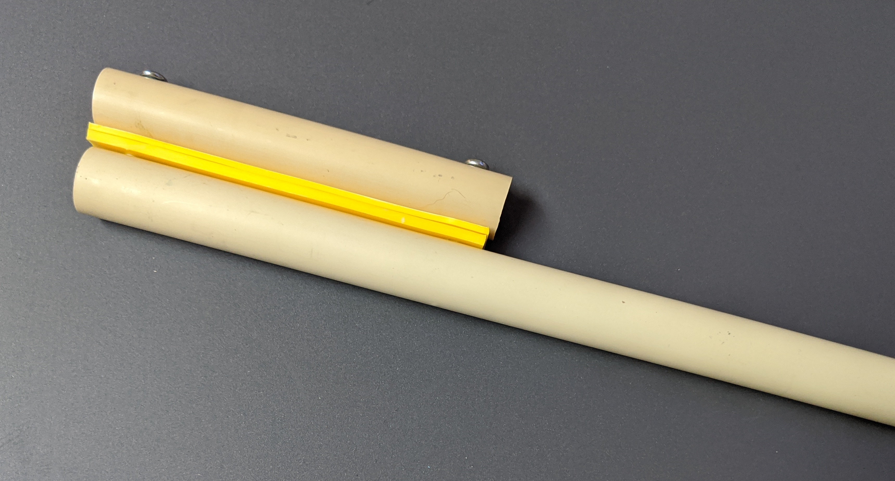

Taper the last 15mm of the tips of the plastic cord so it can fit more closely against the trim line.
To assemble the loose end of the trimline, place 55mm of the unfinished end of the Amsteel on the tapered end of the magnet wrap. In your hand, place two 18mm x 3mm disc magnets edge-to-edge and align the polarity. Carefully place the pair of magnets edge-to-edge at the tip of the Amsteel aligning the long axis of the magnets with the axis of the Amsteel. It can be helpful to peel the backing of the insignia cloth incrementally, exposing only the glue needed to install the next component.
Place the curve of the plastic cord closely around magnets. The tapered ends of the plastic cord should fit closely around the trim line.
Fold the cloth around magnets and trim line foldinfg one side completely and then the other. The folds should be parallel to the trim line axis. The cloth must lay flat over the magnets. Because the trim line is narrower than the magnets, a crease will form where the magnets meet the trim line. This crease must not be on the magnets. Make sure the crease is above the magnets. Pinch the cloth closed below the magnets and round end of the pinched-off fabric.
Stitch the magnet-wrap to the Amsteel so the cloth won’t creep in use. Use a long straight stitch and dark thread to secure the wrap. The attractive force of the magnets is so high, it can make the trim difficult to work in a sewing machine. To reduce this effect, cut two small rectangles of cardboard from a cereal box and place them under the magnets. The increased distance between the magnets and the steel of the sewing machine should make the forces manageable. Be careful to not hit the magnets or the plastic cord with the sewing needle lest bad things happen.
2.2.3 Knots and Balls
Tie an overhand knot at the point where the magnet wrap meets the Amsteel. The knot should be just barely above the plastic cord buried inside the magnet wrap.
Thread a medium stopper ball onto the trimline, recessed side first. Slide it all the way to the knot next to the magnet wrap. If the ball does not jam tight on the knot, retie the knot as a figure-eight to make it fatter and improve the fit against the inside of the ball. Mark the trimline 65mm above the top of the medium ball. Tie an overhand knot in the trimline just above that mark. Now thread a small ball onto the trim line and slide it all the way to the knot. Again, if the ball is not tight on the knot, retie it as a figure-eight knot to adjust the fit. The finished product can be seen in Figure @ref(fig:finished-end)
2.3 Cleat Jacket
The Aero Cleat requires a jacket of ferromagnetic stainless steel sheet to create a tether point for the trimline tail. Make a template from the image in Figure @ref(fig:cleat-jacket-template) or reference the original design. Trace the pattern onto a sheet of 0.025” thick 430 stainless steel sheet. Only use 430 stainless steel for the cleat jacket; other grades of stainless steel will not attract the magnets in the trimline. Cut the shape from the metal sheet, drill out the two holes with a 5/32” bit and ease all the edges with a metal file. Most of the edges will be on grippable surfaces, so do a good job of easing them.
{kind=link}
Disassemble the cleat and reassemble it with metal sheet between the two sections of the cleat. Bend the metal sheet around the metal portion of the Aero Cleat. To do this, clamp one side of the jacket in a vise. Use a block of wood and a mallet to fold the other side against metal side of the cleat. Flip the cleat over to expose the unfolded wing of the jacket and clamp the cleat in the vise. Again, use the block of wood and a mallet to fold the remaining wing. Remove the cleat from the vise, lay it flat on a table top and use the block and mallet to crease the folds.
If you don’t have a bench vise or a mallet, you can fold the wings with a pair of boards and pair of boots. Place the re-assembled cleat on a board on the ground, with the metal cleat side up. Step carefully on the metal part of the cleat to fold the lower wing of the jacket against the metal of the cleat. Flip the cleat over to place the remaining wing against the wood. Again, step on the cleat to fold the wing against the metal of the cleat. Put a second board on top of the cleat and stomp it a few times to finish the crease of the jacket.
2.4 Separation block
The juncture of the flying lines and the trim line is managed by the separation block as shown in Figure @ref(fig:separation-block).
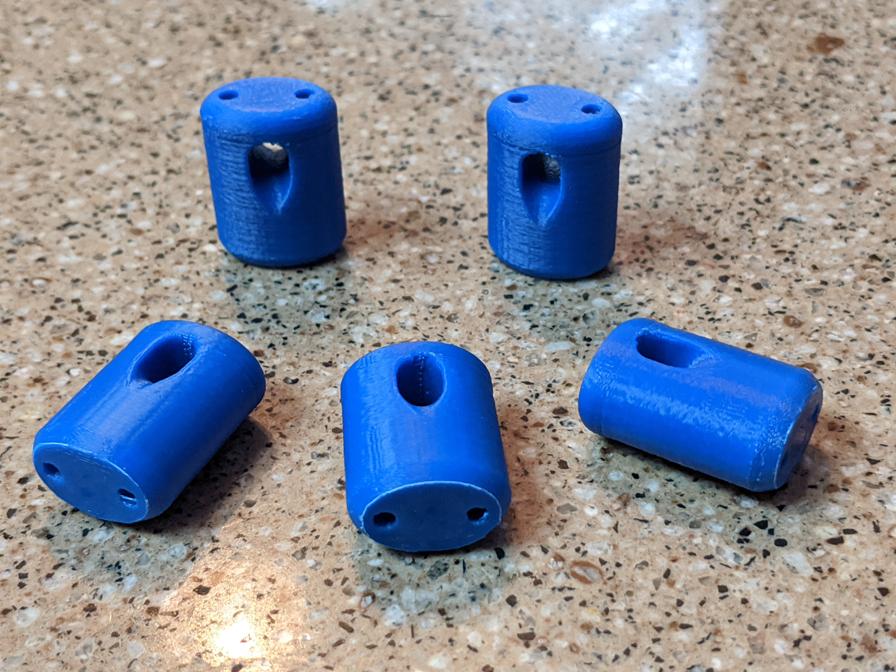
This component provides a curved path to serve as a pully for the trim line and a guide path for each of the main flying lines. The 3-D model for this component is accessible in the Kite Bar Barts repository. Should you print this model, use a 1/8” drill to clean out the flying-line bore holes before installation. This step will simplify threading the flying lines.
2.5 Flag line
The flag line allows the kite to be flagged out via one of the top lines. It bridges the distance from the flying line at the underside of the separation block to the underside of the kite bar. The line is about 1400mm of 1/16” Ultrex 12 that encloses about 400mm of 2mm bungie. A short loop is incorporated into each end. This design allows the flag line to stay taught whether the bar is trimmed in or out. The Ultrex jacket can handle the loads experienced during release to assure a clean flag-out without damage to the flag line. The dimensions for the flag line are tightly constrained by the need to maintain line tension throughout the trim range. They can be calculated using a copy of the Google Sheet kite bar elastic flag line length calculations (http://tinyurl.com/y4k5chgv)
2.5.1 Forming the ends
To build the flag line, cut 1370mm of 1/16” Ultrex 12. Mark each end at 45mm, 65mm, 85mm, and 140mm. The 65mm will be the end of the loop while the 45mm and 85mm marks will align at the top of the loop. Make a brummel splice at one end to secure that loop.
The opposite end of the flag line is more complex owing to its need to secure the flying line against the separation block. The 1/16” Ultrex is not large enough to not pull through the separation block under load. To prevent that, bury a segment of Ultrex inside the loop at this end of the flag line to make it fatter. Start by forming the first loop of the brummel splice. Then splice a scrap of 1/16” Ultrex about 40mm long into the flag line between the 45mm and 85mm marks. Complete the brummel splice, and cut the ends off the short added segment and bury the remainder.
2.5.2 Inserting the bungie
Unspool a meter of 2mm bungie. You can leave it attached to spool for this step. Add a threading end of insignia cloth to the free end of the bungie. A rectangle of peel-and-stick insignia cloth about 8mm x 40mm will work well. Measure 390mm from the back-end of the threading end and mark this point with a narrow strip of insignia cloth. Route a very long fid inside the flag line from the near end of one loop to the near end of the other. The fid should occupy the entire length of the otherwise unoccupied flag line. Pull the 2mm bungie through the jacket and out the opposite end until only the thread end cloth is visible. Clamp this end with a spring clip. Align the strip of insignia cloth with the other entry-point into the flag line jacket. Clamp this end with another other spring clip.
Use a narrow, 2m long stick and some cord to stretch the flag line. Old tubular tent poles or kite spars serve well as the stick. 300-600lb test flying line run inside the tube makes a great stretching cord. Anchor the flag line at one end of the stick. Use cord affixed to the opposite end of the stick to put the flag line under tension. Start milking the jacket of the flag line back and forth to evenly distribute the jacket and bungie. Retension the flag line and milk it again. Continue milking the jacket back and forth and retensioning until it stops elongating. With the flag line still stretched and the bungie still constrained by spring clips, sew the length of the flag line from spliced loop to spliced loop, back stitching at each end. Use a straight stitch for this step.
Remove the spring clips and cut off the bungie that protrudes from the jacket. The bungie must be fully hidden inside the jacket to assure smooth operation.
2.5.3 Flag line tether
To the lower end of the flag line–the end that has not been fattened–affix a quick-release tether. The tether will require one 2” cotter pin, 40mm of 1/2” OD vinyl tubing, 240mm of 1/16” Ultrex 12, ~120mm of 2mm bungee, and a small ball or a stub of vinyl tubing.
Cross drill through the 40mm of vinyl tubing about 5mm from the end with a 7/64” bit. Cut the cotter pin down to 40mm and round the end on coarse stone or file. splice the 200mm of Ultrex to form a line with a loop on each end. One these line will need to accept the bucket handle end, so size it appropriately.
Larkshead the cotter pin and Ultrex line to the end of the flag line. Thread the 2mm bungie through the holes in the vinyl and the larkshead. Tie off each end of the bungie with an overhand knot to retain it. Leave a 5mm tail on each end. Tie off the second side of the bungie, cut it and apply cyanoacrylate glue to prevent fraying. Pull the Ultrex line down through the vinyl and larkshead the small ball onto the loop. A finished assembly is shown in @ref(fig:flagline-disconnect)
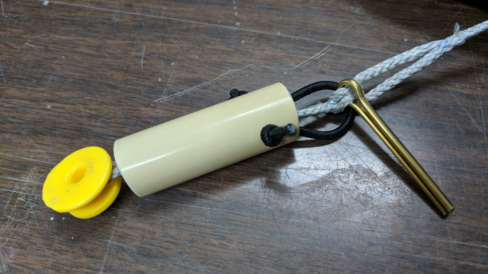
2.6 Stub line
The non-flagging flying line needs to be terminated at the underside of the separation block in the same manner as the flying line that does flag. This is accomplished with a short loop called the stub line. To match the upper end of the flag line, the stub line is made from 300mm of 1/16” Ultrex 12.
Mark the 300mm line segment 130mm from one end. Use a wire fid to splice the 130mm segment inside the 170mm segment that remains. The resulting segment will be about 155mm long. The segment is mostly double thickness with about 30mm of single thickness line on the end. Apply cyanoacrylate glue or a small wrap of insignia cloth to the unfinished end. Fold the 155mm segment in half and tie an overhand knot to form a small loop. The finished product is about 50mm long.
2.7 Bar End Loops
The kite bar requires a loop on each end to affix the steering lines. These loops require two 350mm segments of 1/16” Ultrex 12. To make them, fold each loop in half and tie an overhand knot at the end with about 10mm of tail. The length of these two lines must match. To achieve this, hook the loop ends around a rounded component on a bench vise. Gently pinch the line with an adjustable wrench on the loop side of the knots. Use the wrench to pull the knots evenly while you pull the ends with standard pliers. With the knot complete and the lines equal in length, put little cyanoacrylate glue on the line ends to prevent fraying. See the detail diagram in Figure @ref(fig:bar-end-loop).

2.8 Steering Lines
The steering lines run from the bar end loops to the ends of the back lines. They require two 1165mm segments of 1/16” Ultrex 12. Mark one end of each segment at 110, 190, 270, and 410mm. Use these marks to create a brummel splice with an 80mm loop. See the loop details in Figure @ref(fig:steering-lines).
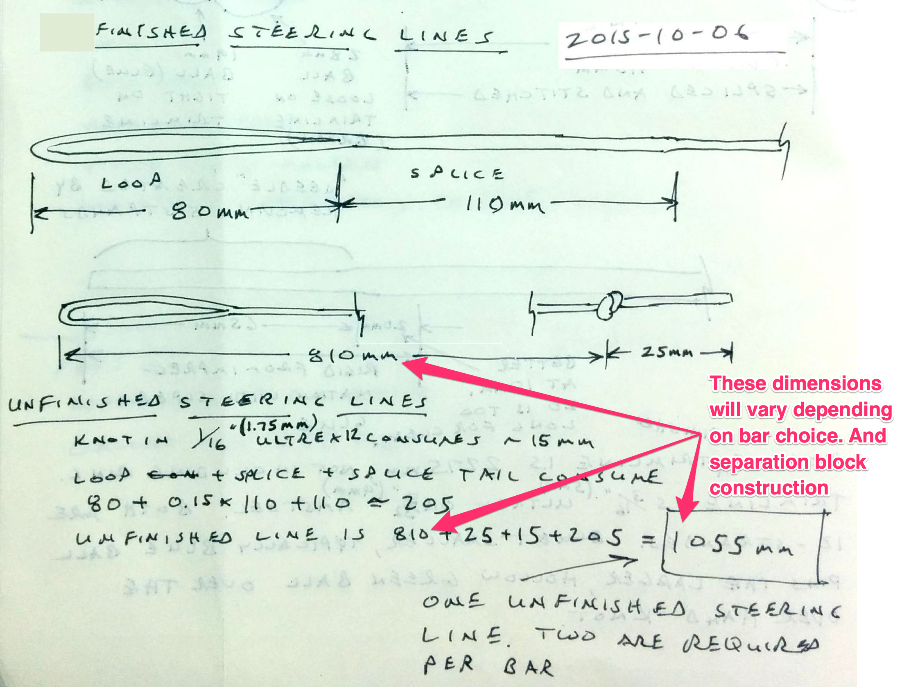
With the loops complete, stretch the pair of lines evenly and mark both lines at about 50mm from the non-loop end. Tie an overhand knot in each line at the mark. Gently pinch the line with an adjustable wrench on the loop side of the knots. Use the wrench to pull the knots evenly while you pull the ends with standard pliers. With the knot complete and the lines equal in length, tie a second overhand knot close to the first knot to act as a stopper for the first. Then put a little cyanoacrylate glue or a small wrap of insignia cloth on the line ends to prevent fraying.
2.9 Mini-chickenloop
This bar uses a small chickenloop that provides a quick disconnect from the kite, trim line retention, and a below-the-bar grip. The quick disconnect will separate the trim line from the flier’s harness when pushed away. The trim lime retention feature is required to keep the bar from sliding off the end of the trim line. Below-the-bar grip is useful for Arc fliers when disconnecting while the kite is at zenith. The chickenloop is as short as possible to maximize the flier’s reach and the usable bar throw. That’s how it gets the moniker mini-chickenloop or MCL.

The MCL is constructed from 410mm of 2.5mm (7/64”) Amsteel Blue, 140mm of 2mm bungie, a release pin made from 80mm of 0.102” diameter stainless steel, a 24mm pin of 0.102” diameter stainless steel, and a 3-D printed chickenloop release. The 3-D model for the chickenloop release is accessible in the Kite Bar Barts repository. Examples of the printed part are shown in Figure @ref(fig:chickenloop-release).
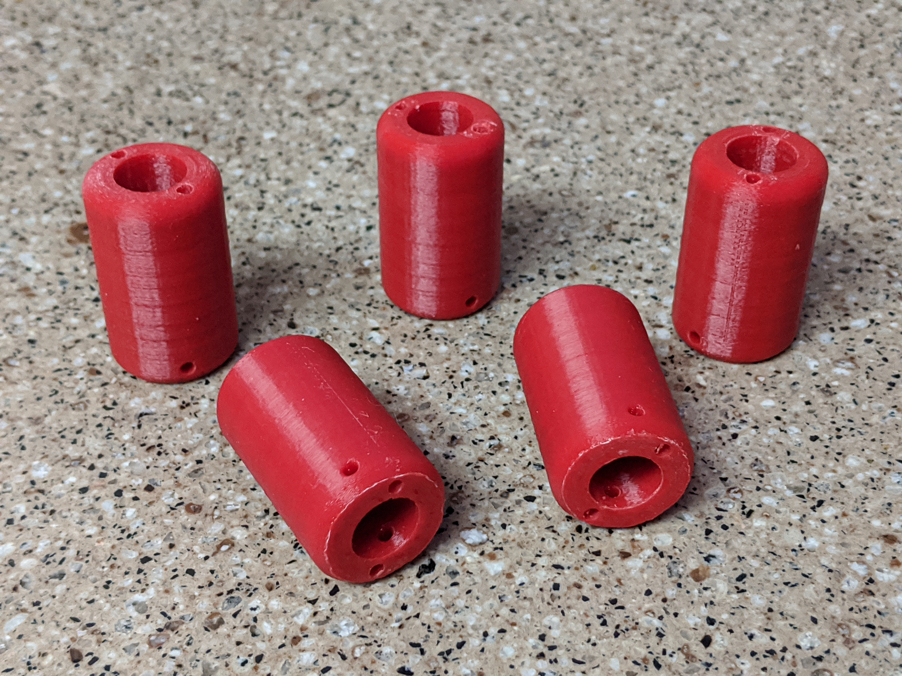
2.9.1 Preparing the chickenloop release
Drill out the long bores of the chickenloop release with a 7/64” drill. Drill it out in two passes to avoid stressing the thin walls of these bores holes. For the cross bore, again use a 7/64” drill, but do not drill completely through both walls of the chickenloop release. Instead, drill through the first wall, across the large center bore, and partially into the second wall. This will make the initial insertion and alignment of the trimline retention pin simpler.
Cut a 24mm segment of the 0.102” diameter stainless rod. Ease each end of this pin with a metal file. Hold the pin with pliers while you briefly heat one tip of the pin in a flame; two seconds in the heat of a propane torch is about enough. You want it hot enough to soften the ABS plastic of the chickenloop release, but no hotter. Slide the hot end of the pin into the completely-drilled hole and into the opposite hole until it stops. Press the pin fully in with a mallet or pliers.
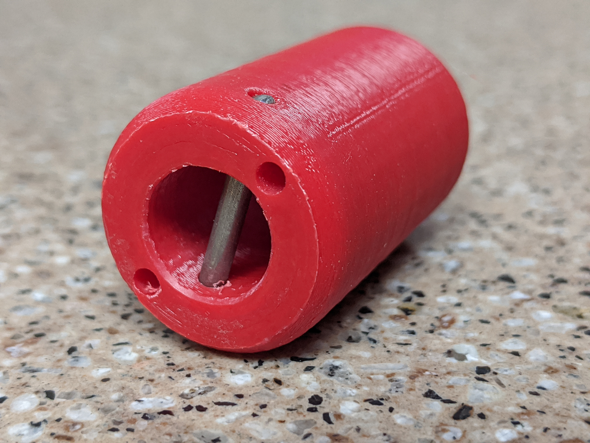
2.9.2 Making the quick-release pin
To make the quick-release pin, you will first need to make a mandrel to bend it around. Cut about 10cm of 0.25” diameter hot-rolled steel. Mark the center of the rod. Then fold it in half using a vise and a hammer. The U-shaped gap that remains needs to be just wide enough to accommodate the 0.102” wire. There needs to zero clearance. Yet the gap also needs to allow the wire to slide all the way through the “U”. That’s required to the get the Q-R pin off the mandrel once it’s formed.
Ease the end of the 0.102” rod on a file. Place the 0.102” rod into the gap of the mandrel and clamp the mandrel U-end down in the vise. The rod should be about 3 cm above the top of the vise. The rod should not protrude from the mandrel. Instead, it should be recessed about 1mm below face of the mandrel. The tip of the rod should just barely protrude beyond the contact point with the mandrel.
Apply pressure with your hand while you hammer the rod to bend it around the mandrel. Continue in this fashion going around the mandrel until the opposite side of the mandrel prevents further bending. Remove the mandrel from the vise, and the pin from the mandrel.
Pinch the bent portion of the pin in an adjustable wrench to hold it in the jaws of the vise. Squeeze the bent portion of the pin towards the straight portion until it makes contact. Re-position the wrench in the pin, then use the vise to close the gap down towards the bent end of the pin. The remain hole should be just large enough to accommodate a 4mm Amsteel Blue. The bent tip should form a right angle with the straight portion.
2.9.3 Preparing the chickenloop line
Cut a 410mm segment of 2.5mm Amsteel. Measure from each end of the Amsteel to make a mark at 55mm and 130mm. Thread chickenloop line through the eye of the Q-R pin. Self-splice the ends of the line together, diving in at the 55mm marks. Use the 130mm marks as the points to insert the fid to pull the end through. With both ends emerging from the 130mm marks, pull the ends hard to make the joint tight. Then grip the joint tightly and milk the ends back into the sleeve portion of the line.
Fold the loop in half with the splice in the middle. Stitch the two sides of the loop together with a zig-zag stitch. Stitch the middle 110mm of the folded loop leaving a 15 mm loop at each end.
2.9.4 Preparing the bungie
Seal the end of a 2mm bungie. Trim the sealed end to make it clean. Make a mark 140mm from the end, seal it with a drop of cyanoacrylate glue and activator. Use a razor blade to cut the bungie in the middle of the sealed spot. Tie an overhand knot at the very tip of one end.
2.9.5 Assembling the MCL
Thread the untied end of the bungie from the top of the chickenloop release and out the bottom. Thread the bungie on lop end of the chickenloop line, then up the through the remaining vertical bore hole and out the top. Tie an overhand knot in the end of the bungie to secure the end at the top of the chickenloop release. Make sure there is a little slack in the bungie.
3 Assembly
3.1 Bar assembly and threading line
To thread the trim line, put the threaded end through the cleat, entering at the jam side. Exit the cleat at the top, routing up through the separation block. Reenter the cleat and go through its serpentine path. Leave just enough line above the cleat to provide the desired trim. A spring clamp applied to both sides of the trimline just above the cleat is a good way to maintain the correct amount of trim while threading the trimline. Route the trimline through the cleat bead. Go down through the center of the bar, through the chickenloop release, through the near loop of the chickenloop line, through the quick-release pin, then up through the chickenloop release, but on the other side of the retaining pin.
Then go back through the center bore of the bar and through the cleat bead. Slide the cleat bead down towards the bar to leave lots of slack next to the cleat. Before going any further, pull trimline into the cleat from below the cleat. Pull enough to provide a 5 cm loop of trimline on each side of the cleat. You’ll need this slack in the next step.
Route the loose end of the trim line up through the cleat’s serpentine path. You want to make large parallel loops of line going back and forth through the serpentine. Route about 5cm of the trim out of the top of the cleat.
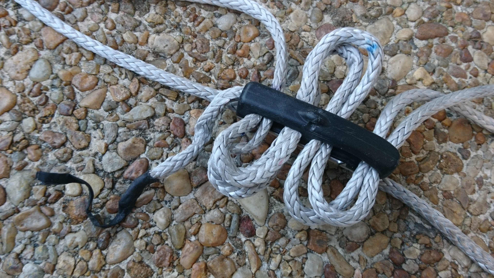
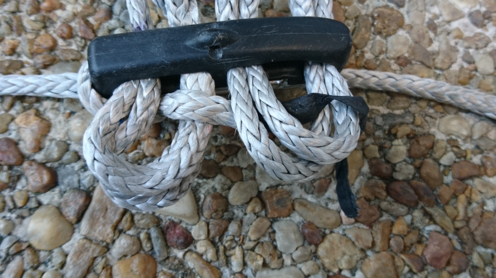
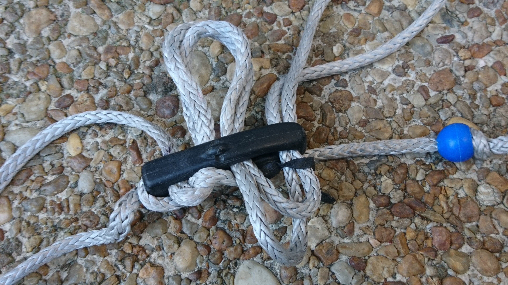

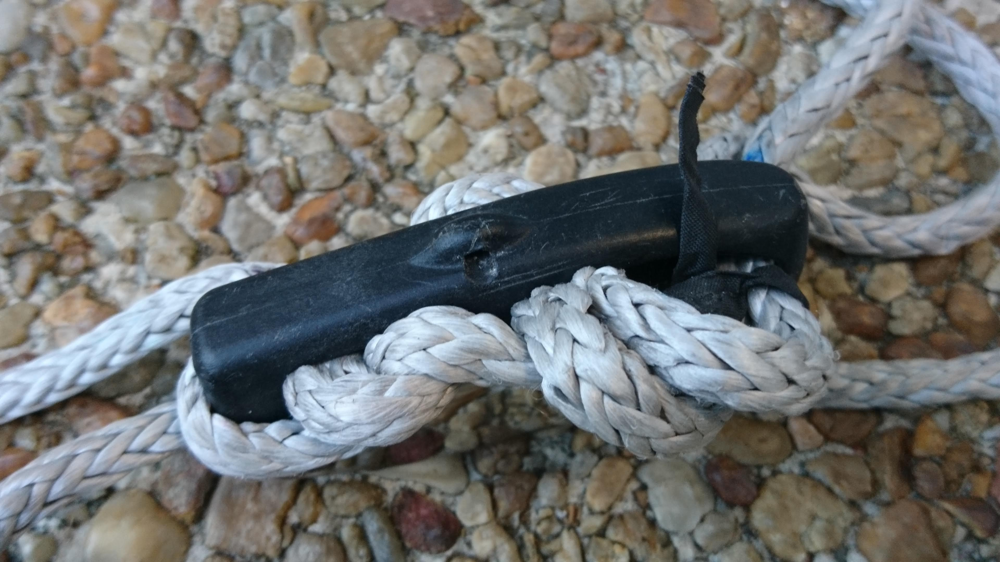
With the trimline tight in the serpentine path, have a friend help you put the trim line in tension. Then slide the cleat bead up to the cleat. Look at the cleat from the pilot’s point of view and rotate the cleat until the jaws are up. Check the rotation of the cleat bead so that the flag line guide path is on the lower left side of the cleat. Pull the trim lines and jam the bead onto the bottom of the cleat.
You’ll want to verify you can reach the trimline end under normal flying conditions. It’s easier to assess the cleat position before the flying lines are attached so pause the assembly for a moment to check and adjust the cleat position. To do this, put your harness on, clip the chickenloop into the harness and have a friend pull on the trim line by the separation block. They should pull the bar to your side about 30 degrees above horizontal. Verify you can reach the jaws of the cleat and grab the trim line tail without over-reaching. If you have to stretch to reach the tail, the cleat is too far away. You can move it closer by moving some of the trim line up through the cleat. For each centimeter you need to move the cleat down, you’ll need to move two centimeters of line through the cleat toward the kite. Making this adjustment is a bit tedious, but the trim line tail must be in easy reach under load.
3.2 Attaching the main flying lines
With the trim line routed, the flying lines can be attached. Route the right-side flying line down through the separation block and attach the stub line stopper to the end-loop of the flying line with a larks head to retain the flying line in the stopper.
Route the left-side flying line through the remaining hole in the separation block. Continue routing it through the cleat bead and then the bar. Attach the flag line to the flying line with a larks head. Pull flag line up through the bar and bead with the flying line. The routed lines should look like Figure @ref(fig:flag-line-at-separation-block) at the separation block. The over-all assembly should look like @ref(fig:upper-section-of-assembled-bar)

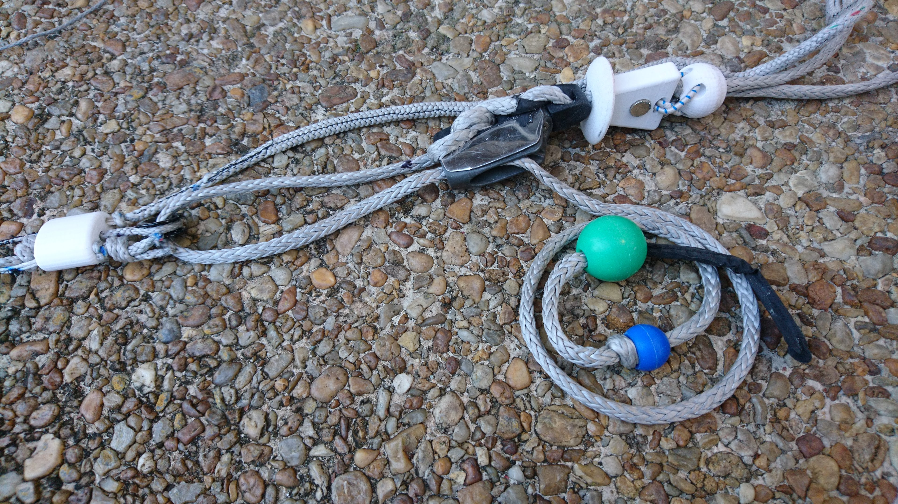
3.3 Bar End Loops
Pull each bar end loop through one of the holes at the ends of the bar. Route the loop from the pilot-side of the bar to the kite side so the knots are left on the pilot side. Make sure both sides of the loop are even and the knot sits flush against the back of the bar.
3.4 Steering line leaders
Use a larks head to attach the loop of each steering line leader to the loop of its steering line. Then attach the knot of the leader to the loop of the bar-end loop with a larks head. Keeping the knot of the leader line next to the bar minimizes the risk of snagging the steering lines in the components of the bar.
With all the flying lines attached, the trim control let all the way out and the bar pulled all the way back, the tips of all four flying lines should converge to the same point.